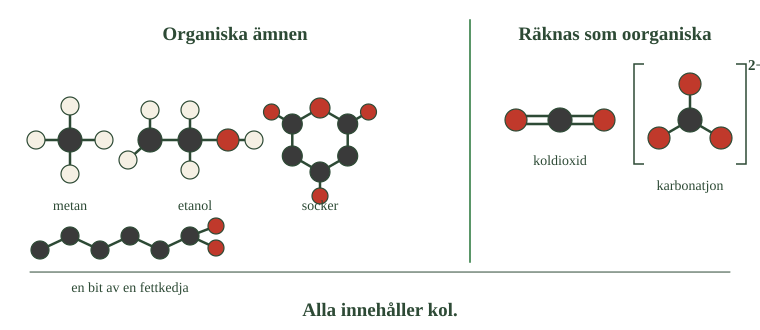
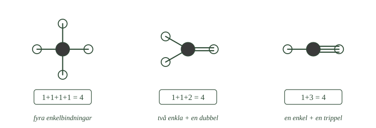
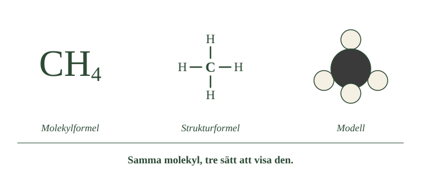
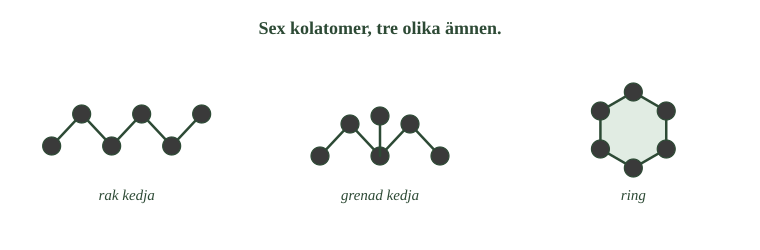

- Vad betydde ordet organiskt från början?
- Vad var livskraften, och varför övergav kemisterna tanken?
- Vad handlar organisk kemi om i dag?
- Vilka grundämnen brukar ingå i organiska ämnen?
- Varför räknas inte koldioxid som ett organiskt ämne?
Kol är ett ovanligt grundämne. Kolatomer kan sitta ihop med varandra på många olika sätt, och samtidigt binda till andra atomer som väte, syre och kväve. Därför finns det fler ämnen som innehåller kol än ämnen av något annat grundämne. Den del av kemin som handlar om dem kallas organisk kemi.
Förr trodde man att vissa ämnen bara kunde bildas i levande saker
För länge sedan delade kemister in ämnen i två grupper. I den ena gruppen fanns ämnen som kom från stenar, vatten och luft. I den andra fanns ämnen som man hittade i växter och djur.
Socker kom från sockerbetor. Fett kom från djur. Alkohol bildades när frukt jäste. Alla de här ämnena kom från något levande, och därför kallades de organiska ämnen.
Kemisterna trodde att det fanns något särskilt i levande varelser som behövdes för att ämnena skulle kunna bildas. De kallade det för livskraft. Utan livskraft skulle det vara omöjligt att tillverka ämnena i ett laboratorium.
Det visade sig att man kunde tillverka ämnena ändå
Under 1800-talet började kemister göra försök som visade något annat. De lyckades tillverka organiska ämnen i laboratoriet, av vanliga ämnen som inte kom från något levande.
Ett tidigt exempel var urinämne. Det hade hittats i urin, alltså i något levande. Men en kemist lyckades framställa det i sitt laboratorium, utan att någon växt eller något djur var inblandat.
Då föll tanken om livskraft. Men namnet organisk kemi hade redan använts länge, och det behöll man.
I dag betyder organisk kemi något annat
Organisk kemi handlar i dag inte om liv. Det handlar om kolföreningar, alltså ämnen som innehåller kol.
Nästan alla organiska ämnen innehåller kol och väte. Många innehåller också syre eller kväve. Metan, etanol, bensin, matolja, socker och plaster är alla organiska ämnen.
Några kolföreningar räknas ändå inte som organiska
Det finns undantag. Koldioxid innehåller kol, men räknas inte som ett organiskt ämne. Samma sak gäller kalk och andra karbonater.
Det beror inte på att molekylerna är konstiga. Det beror på att kemin delades in på det sättet för länge sedan, och att indelningen blev kvar.
- Leta efter kolatomen i varje molekyl. Finns den i alla?
- Jämför hur många atomer molekylerna till vänster har jämfört med de till höger.
- Koldioxid innehåller kol men står till höger. Vad skulle kunna vara skälet?

- Vad betydde ordet organiskt från början?
- Vad var livskraften, och varför övergav kemisterna tanken?
- Vad handlar organisk kemi om i dag?
- Vilka grundämnen brukar ingå i organiska ämnen?
- Varför räknas inte koldioxid som ett organiskt ämne?
Kol är ett ovanligt mångsidigt grundämne. Kolatomer kan bindas samman på många olika sätt och samtidigt binda till andra atomslag, till exempel väte, syre och kväve. Därför kan kol bilda ett mycket stort antal olika kemiska föreningar. Det finns faktiskt fler kända föreningar som innehåller kol än föreningar av något annat grundämne. Den del av kemin som framför allt handlar om dessa ämnen kallas organisk kemi.
Namnet kommer från tron att vissa ämnen krävde liv
Namnet organisk kemi kommer från en tid då kemister trodde att vissa ämnen bara kunde bildas i levande organismer. Ämnen som socker, fett och alkohol hade man hittat i växter och djur, och därför kallades de organiska ämnen. Man trodde att det krävdes någon form av särskild "livskraft" för att tillverka dem.
Försök i laboratorium visade att livskraften inte behövdes
Under 1800-talet visade kemister att detta inte stämde. Organiska ämnen kunde framställas i laboratorier utan att någon levande organism var inblandad. Ett av de första exemplen var urinämne, som hade hittats i urin men som en kemist lyckades tillverka av oorganiska ämnen. Trots att förklaringen med livskraft övergavs behöll man namnet organisk kemi.
Organisk kemi är kemin om kolföreningar
I dag handlar organisk kemi därför inte om huruvida ett ämne är levande eller kommer från en levande organism. Organisk kemi är i stället den del av kemin som studerar kolföreningar och deras egenskaper och reaktioner.
Nästan alla organiska föreningar innehåller kol tillsammans med väte, och många innehåller också syre, kväve, svavel eller andra grundämnen. Exempel på organiska ämnen är metan, etanol, bensin, matolja, socker, proteiner och många plaster.
Det finns samtidigt några enkla kolföreningar som av tradition brukar räknas till den oorganiska kemin. Dit hör exempelvis koldioxid och olika karbonater. Att koldioxid inte räknas som organiskt beror alltså inte på molekylen i sig, utan på hur kemin historiskt har delats in.
---
Gränsen mellan organiskt och oorganiskt är ritad av människor
Standardtexten säger att organisk kemi handlar om kolföreningar, och att några enkla kolföreningar av tradition hamnar utanför. Det låter som att gränsen är lite slarvig men i grunden begriplig. I själva verket finns ingen gräns alls i naturen.
Ingen molekyl bär en markering som talar om vilken sida den hör hemma på. Koldioxid, karbonat och cyanid innehåller kol men behandlas i den oorganiska kemin. Ureamolekylen innehåller kol och behandlas i den organiska. Skillnaden ligger inte i molekylerna utan i vilka reaktionsmönster kemisterna tyckte hörde ihop.
Att indelningen ändå finns kvar beror på att den fungerar. Föreningar med kolkedjor och väteatomer reagerar på liknande sätt med varandra. Det gör det praktiskt att behandla dem tillsammans, oavsett var de kom ifrån.
Berättelsen om livskraften är också hårdare tillrättalagd än den brukar berättas. Ett enda försök avgjorde ingenting. Den kemist som framställde urinämne utgick från ämnen som i sin tur hade utvunnits ur djurmaterial, och tanken om livskraft levde kvar i decennier efteråt. Det som till slut avgjorde saken var inte ett experiment utan hundratals.
Om modellen. Standardnivån behandlar organisk och oorganisk kemi som två fack. Det är en användbar uppdelning, och du kommer att möta den i varje lärobok. Men den beskriver hur ämnet kemi är organiserat, inte hur naturen är organiserad. Naturen känner bara till atomer och bindningar.
- Hur många elektroner har kolatomen i sitt yttersta skal?
- Vad händer när två atomer delar på ett elektronpar?
- Hur kan en kolatom ha fyra bindningar men färre än fyra grannar?
- Vad visar en strukturformel som en molekylformel inte visar?
- När behövs en förenklad strukturformel?
Kolatomen har fyra elektroner ytterst
En kolatom har sex elektroner. Två av dem ligger i det innersta skalet. Fyra ligger i det yttersta skalet.
Ett yttersta skal är fullt när det har åtta elektroner. Kolatomen har fyra, alltså saknas fyra.
Kolatomen delar elektroner i stället för att ta eller ge
Vissa atomer löser det genom att lämna ifrån sig elektroner eller ta upp nya. För kolatomen skulle det betyda att fyra elektroner måste flytta, och det är för mycket.
I stället delar kolatomen elektroner med andra atomer. Två atomer lägger ett elektronpar mellan sig och använder det tillsammans. Ett sådant delat par kallas en elektronparbindning.
Eftersom kolatomen saknar fyra elektroner kan den vara med i fyra bindningar.
Metan är det enklaste exemplet
I metan sitter en kolatom ihop med fyra väteatomer. Varje väteatom bidrar med en bindning, och kolatomen får sina fyra. Metan skrivs \(\ce{CH4}\).
Bindningarna kan fördelas på olika sätt
De fyra bindningarna behöver inte gå till fyra olika atomer.
Ibland delar två atomer på två elektronpar i stället för ett. Det kallas en dubbelbindning och räknas som två bindningar. Delar de på tre par blir det en trippelbindning, som räknas som tre.
Summan blir alltid fyra. En kolatom kan ha fyra enkla bindningar. Den kan ha två enkla och en dubbel. Den kan ha en enkel och en trippel.
- Räkna strecken vid varje kolatom, och räkna sedan bindningarna.
- Hur många atomer binder kolatomen till i det tredje exemplet?
- Varför blir antalet grannar färre när bindningarna blir dubbla eller trippla?

Samma molekyl kan skrivas på flera sätt
En molekylformel talar om vilka atomer som finns med och hur många av varje. \(\ce{CH4}\) betyder en kolatom och fyra väteatomer. Men formeln säger ingenting om hur atomerna sitter ihop.
I en strukturformel ritar man bindningarna som streck. Ett streck är en bindning. Två streck bredvid varandra är en dubbelbindning.
När molekylerna blir stora blir strukturformlerna jobbiga att rita. Då kan man skriva en förenklad strukturformel. Där skriver man varje kolatom med sina väteatomer direkt efter. Propan blir \(\ce{CH3CH2CH3}\).
- Räkna väteatomerna i varje kolumn. Blir det fyra överallt?
- Vilket av de tre sätten visar hur atomerna sitter ihop?
- Om du bara fick se molekylformeln, vad skulle du inte kunna veta om molekylen?

- Hur många elektroner har kolatomen i sitt yttersta skal?
- Vad händer när två atomer delar på ett elektronpar?
- Hur kan en kolatom ha fyra bindningar men färre än fyra grannar?
- Vad visar en strukturformel som en molekylformel inte visar?
- När behövs en förenklad strukturformel?
Kolatomen har fyra elektroner i sitt yttersta skal
Förklaringen till att kol kan bilda så många olika föreningar finns i kolatomens elektroner. En kolatom har sex elektroner. Två finns i det innersta elektronskalet och fyra finns i det yttersta. Kolatomen behöver därför fyra elektroner till för att få ett fullt yttersta skal.
I stället för att ta upp eller lämna ifrån sig fyra elektroner delar kolatomen elektroner med andra atomer. På så sätt bildas elektronparbindningar, som också kallas kovalenta bindningar. En kolatom kan bilda sammanlagt fyra bindningar.
Kolatomens fyra bindningar kan fördelas på olika sätt
Det enklaste exemplet är metan. I en metanmolekyl binder en kolatom till fyra väteatomer, och kolatomen får därmed sina fyra bindningar. Ämnet skrivs \(\ce{CH4}\).
Bindningarna behöver inte vara fyra stycken till fyra olika atomer. I en dubbelbindning delar två atomer på två elektronpar, och i en trippelbindning på tre. Summan ska ändå alltid bli fyra: en kolatom kan ha fyra enkelbindningar, två enkelbindningar och en dubbelbindning, eller en enkelbindning och en trippelbindning.
Samma molekyl kan skrivas med olika slags formler
En molekylformel visar vilka atomslag som ingår och hur många atomer av varje slag. Den visar däremot inte hur atomerna sitter ihop.
I en strukturformel ritas bindningarna med streck. Ett streck motsvarar ett delat elektronpar, en dubbelbindning två streck.
När molekylerna blir stora blir strukturformlerna svårlästa. Då används en förenklad strukturformel, där varje kolatom skrivs med sina väteatomer direkt efter sig. Propan kan skrivas \(\ce{CH3CH2CH3}\) i stället för att ritas ut med tio streck.
---
Metan är inte platt
Standardtexten visar metan som en kolatom med fyra streck ut åt sidorna, ofta ritade som ett kors. Den bilden är bekväm att rita på ett papper, men den är fel.
Elektronparen i bindningarna stöter bort varandra, eftersom de alla är negativt laddade. De placerar sig därför så långt ifrån varandra som möjligt. På ett plant papper skulle det ge fyra riktningar med 90 grader emellan. I tre dimensioner går det att komma längre isär än så.
Resultatet är en tetraeder: kolatomen i mitten och de fyra väteatomerna i hörnen av en tresidig pyramid. Vinkeln mellan två bindningar blir ungefär 109,5 grader, inte 90.
Det här har följder. Eftersom molekylen är tredimensionell spelar det ingen roll vilken av de fyra positionerna en viss atom sitter på — de är likvärdiga. Ritar man metan platt ser det ut som att "uppåt" och "åt höger" vore olika platser. Det är de inte.
Samma sak gäller elektronskalen. Bilden av elektroner som ligger i skal är en förenkling. Elektronerna finns i områden med olika form, och det är formen på de områdena som avgör hur bindningarna riktar sig.
Om modellen. Streckformeln är inte ett försök att visa hur molekylen ser ut. Den är ett sätt att visa vad som sitter ihop med vad. Till det duger den utmärkt, och kemister använder den varje dag. Men den säger ingenting om vinklar, avstånd eller form — och för många kolföreningar är det just formen som avgör hur de fungerar.
- Vad gör kol speciellt utöver förmågan att bilda fyra bindningar?
- Hur långa kan kolkedjor bli?
- Vad skiljer en grenad kedja från en rak?
- Hur kan samma antal kolatomer ge upphov till olika ämnen?
- Vad händer med ämnets egenskaper när andra atomslag kopplas till kedjan?
Kolatomer kan sitta ihop med varandra
Kolatomer binder inte bara till väte och syre. De binder också starkt till andra kolatomer.
Det betyder att en kolatom kan sitta ihop med en annan kolatom, som sitter ihop med ytterligare en, och så vidare. Så bildas en kolkedja.
Kedjorna kan vara korta. Etan har två kolatomer. De kan också vara mycket långa. I en plastmolekyl kan det sitta tusentals kolatomer i rad.
Det här är ovanligt. De flesta grundämnen kan inte bilda långa kedjor med sig själva. Kol kan.
Kedjorna kan se ut på olika sätt
En kolkedja behöver inte vara rak.
En kolatom kan binda till fler än två andra kolatomer. Då får kedjan en gren som sticker ut åt sidan.
Kedjan kan också böja sig runt och sluta sig, så att den sista kolatomen binder till den första. Då bildas en ring.
Samma antal atomer kan ge olika ämnen
Tänk dig sex kolatomer. De kan sitta i en rak rad. De kan sitta i en rad med en gren. De kan sitta i en ring.
Det är lika många atomer i alla tre fallen. Ändå är det olika ämnen, med olika egenskaper. Det är alltså inte bara antalet atomer som bestämmer vad ett ämne är, utan också hur de sitter.
- Räkna kolatomerna i varje struktur.
- Hitta den kolatom i den grenade kedjan som har tre grannar.
- Hur många grannar har varje kolatom i ringen? Jämför med kedjans ändar.

Andra atomer kan kopplas på
Till kolkedjan kan man dessutom byta ut väteatomer mot andra atomer. En syreatom här, en kväveatom där. Varje sådan förändring kan ge ämnet nya egenskaper.
Därför finns det så många kolföreningar
Nu finns alla delar på plats. Kolatomen kan bilda fyra bindningar. Kolatomer kan sitta ihop med varandra i långa kedjor. Kedjorna kan vara raka, grenade eller slutna till ringar. Och andra atomslag kan kopplas på.
Tillsammans gör detta att ett litet antal atomslag kan byggas ihop till ett enormt antal olika ämnen — från metan till bensin, läkemedel, plast och de stora molekylerna i din egen kropp.
- Vad gör kol speciellt utöver förmågan att bilda fyra bindningar?
- Hur långa kan kolkedjor bli?
- Vad skiljer en grenad kedja från en rak?
- Hur kan samma antal kolatomer ge upphov till olika ämnen?
- Vad händer med ämnets egenskaper när andra atomslag kopplas till kedjan?
Kolatomer binder starkt till varandra
Det är inte bara förmågan att bilda fyra bindningar som gör kol speciellt. En annan mycket viktig egenskap är att kolatomer kan bilda starka bindningar till andra kolatomer.
En kolatom kan binda till en annan kolatom, som kan binda till ytterligare en, och så vidare. Därmed bildas kolkedjor. Kedjorna kan bestå av några få kolatomer, men de kan också innehålla hundratals eller tusentals. Det är ovanligt: de flesta grundämnen kan inte bilda långa kedjor med sig själva.
Kedjorna kan grena sig och slutas till ringar
Kolkedjorna behöver inte vara raka. En kolatom kan binda till flera andra kolatomer, vilket gör att kedjan kan förgrena sig. Då bildas en grenad kolkedja. Kolatomer kan också kopplas samman så att kedjan sluts och bildar en ring.
Det betyder att samma antal kolatomer kan kopplas samman på flera olika sätt. Även om två ämnen innehåller samma atomslag och lika många atomer kan atomerna vara sammanbundna olika. Då bildas olika ämnen med olika egenskaper.
Andra atomslag kan kopplas till kolkedjan
Till kolkedjan kan dessutom andra atomer och atomgrupper bindas. Några väteatomer kan exempelvis ersättas av syre-, kväve- eller halogenatomer. Varje förändring av molekylens uppbyggnad kan påverka ämnets egenskaper.
Ur ett litet antal atomslag kan därför ett enormt antal olika molekyler byggas. Det är grunden för den organiska kemins variation — från enkla ämnen som metan till bränslen, läkemedel, plaster och de stora molekyler som bygger upp levande organismer.
Kolkedjan är stark av två skäl, inte ett
Standardtexten säger att kolatomer binder starkt till varandra och att det förklarar de långa kedjorna. Det stämmer, men det räcker inte som förklaring. Kisel sitter rakt under kol i periodiska systemet och kan också bilda fyra bindningar. Ändå bildar kisel inga långa kedjor i naturen.
Det första skälet är bindningens styrka. En bindning mellan två kolatomer är stark eftersom kolatomen är liten. Atomkärnorna kommer nära varandra och håller hårt i det delade elektronparet. En bindning mellan två kiselatomer är betydligt svagare, eftersom kiselatomen är större och kärnorna hamnar längre ifrån varandra.
Det andra skälet är att kolkedjan inte lätt bryts av något annat. En kiselkedja reagerar gärna med syre och vatten och faller sönder. Kolkedjan gör det inte, trots att den omges av syre hela tiden. Kolföreningar kan visserligen brinna, men det kräver att reaktionen startas. Vid vanlig temperatur ligger kedjan stilla.
Det är den kombinationen som gör kolkemin möjlig. En kedja som är stark men lätt bryts ner av omgivningen kan inte bygga något varaktigt. Kolkedjan klarar båda kraven, och det är därför den kan bära upp allt från plast till arvsmassa.
Om modellen. Standardnivån säger att kol är speciellt. Det är sant, men "speciellt" är inget svar. Det egentliga svaret handlar om atomstorlek och om hur benägen en bindning är att reagera med omgivningen — två storheter som kemister kan mäta och jämföra mellan grundämnen. Kolets ställning är alltså inte en egenhet utan ett resultat.
Laddar övningskort…
Laddar frågor ...